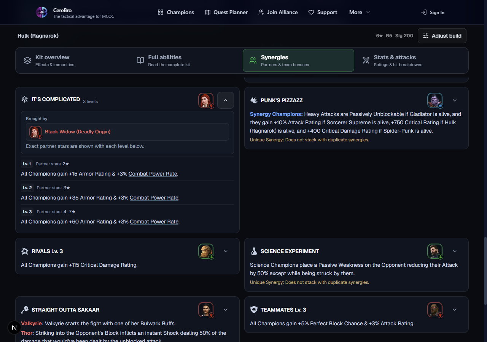
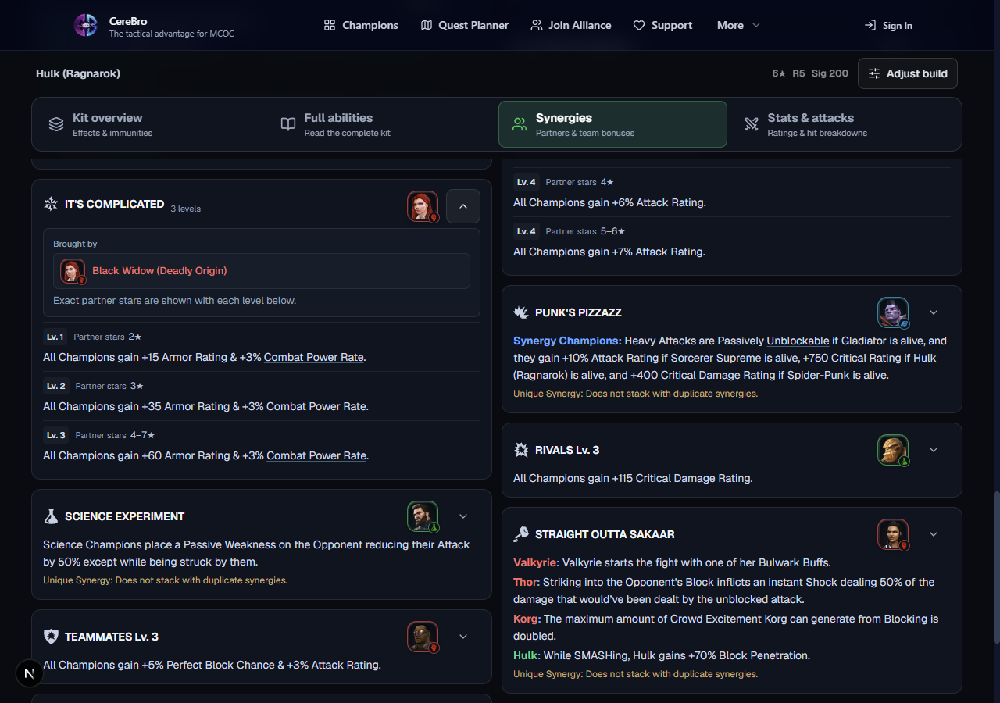
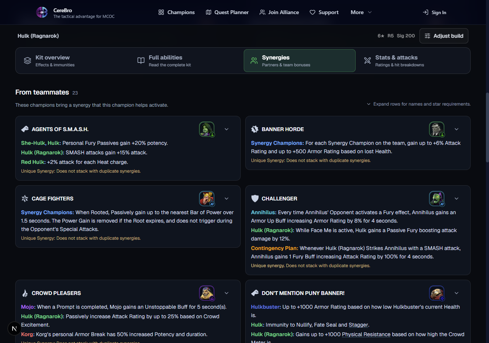
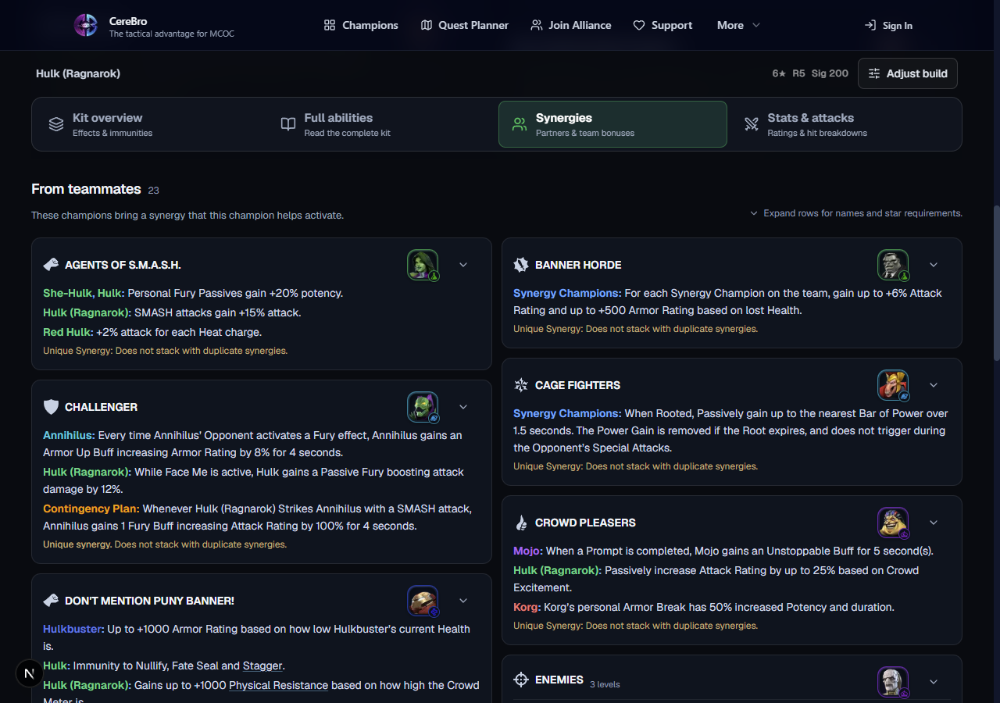
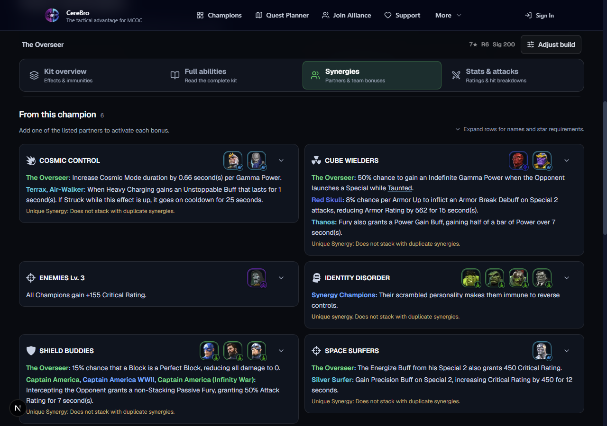
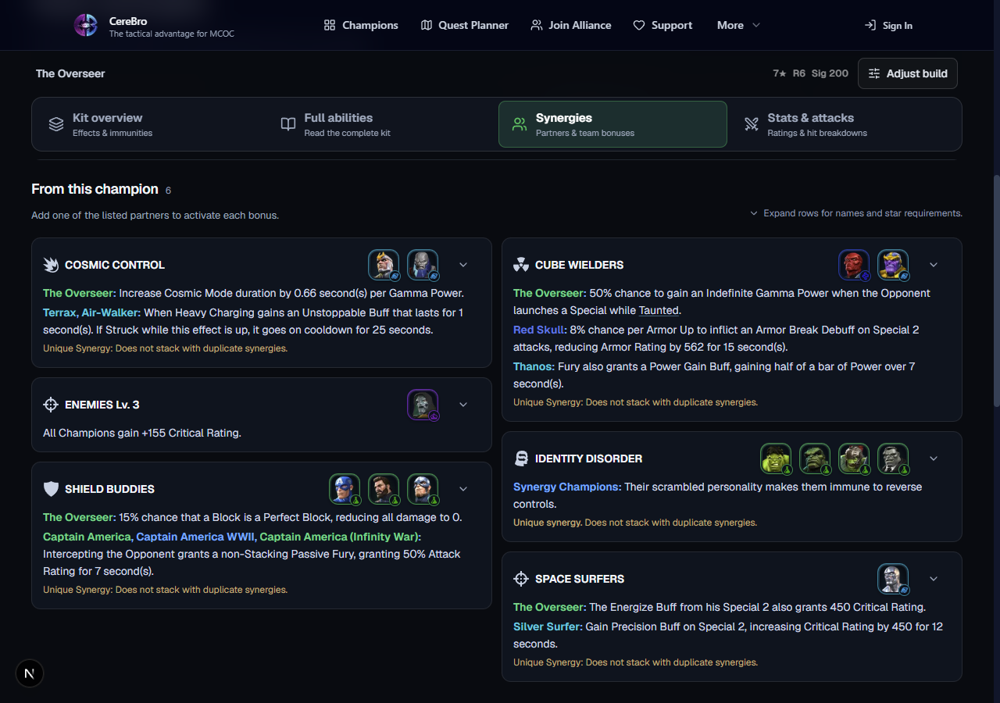
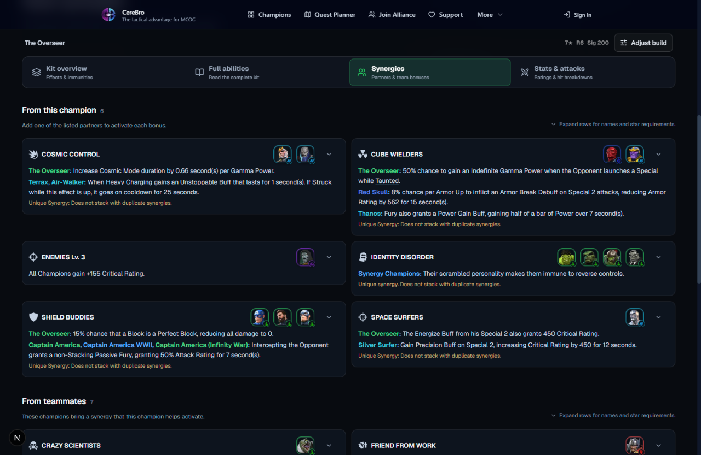
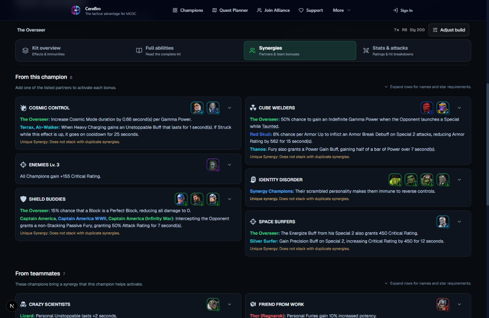
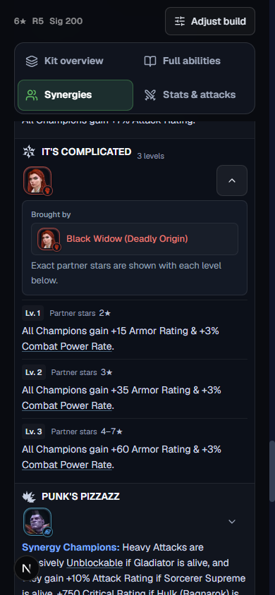
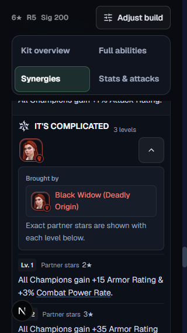

<!DOCTYPE html><html lang="en"><head><meta charset="utf-8"><meta name="viewport" content="width=device-width,initial-scale=1"><title>CereBro synergy flow comparison</title><style>
*{box-sizing:border-box}body{margin:0;color:var(--foreground);font-family:var(--font-sans,system-ui,sans-serif)}
.controls{display:flex;align-items:center;flex-wrap:wrap;gap:10px;margin-bottom:10px}label{font-size:12px;color:var(--muted-foreground)}
select,button{font:inherit;font-size:13px;border:1px solid var(--border);border-radius:var(--radius);padding:8px 10px;color:var(--foreground);background:var(--card)}select{max-width:100%}button{cursor:pointer}button[aria-pressed=true]{color:var(--primary-foreground);background:var(--primary);border-color:var(--primary)}button:focus-visible,select:focus-visible{outline:2px solid var(--ring);outline-offset:3px}.modes{display:flex;gap:4px}.meta{font-size:12px;color:var(--muted-foreground);margin:0 0 10px;line-height:1.6}
.bars{display:grid;grid-template-columns:44px minmax(0,1fr) 68px;gap:5px 8px;max-width:380px;font-size:11px;margin:0 0 16px;align-items:center}.track{background:var(--secondary);border-radius:4px;height:6px;overflow:hidden}.fill{height:6px;border-radius:4px;background:var(--primary)}.beforeFill{background:var(--muted-foreground);opacity:.5}.measure{color:var(--muted-foreground);font-variant-numeric:tabular-nums;text-align:right}
.pair{display:grid;grid-template-columns:repeat(2,minmax(0,1fr));align-items:start;gap:12px}.pair.single{grid-template-columns:minmax(0,1fr)}figure{margin:0;min-width:0}figcaption{font-size:13px;font-weight:600;margin-bottom:8px}.shot{overflow:auto;max-height:960px;border:1px solid var(--border);border-radius:var(--radius)}img{display:block;width:100%;height:auto}.actual .shot img{width:auto;max-width:none}
.detailBox{display:flex;min-height:100px;align-items:center;justify-content:center;background:var(--card);border-radius:var(--radius);padding:16px}.crop{position:relative;overflow:hidden;max-width:100%}.crop img{position:absolute;width:1280px;height:900px;max-width:none}
[hidden]{display:none!important}@media(max-width:540px){.pair{grid-template-columns:1fr}.modes{flex-wrap:wrap}}
</style></head><body><div class="controls"><label for="scene">View</label><select id="scene" aria-label="Screenshot comparison"></select><div class="modes" role="group" aria-label="Compare"><button type="button" data-mode="both" aria-pressed="true">Both</button><button type="button" data-mode="before" aria-pressed="false">Before</button><button type="button" data-mode="after" aria-pressed="false">After</button></div><button type="button" id="scale" aria-pressed="false">Actual size</button></div>
<p class="meta" id="meta"></p><div class="bars" role="img" id="heightChart" aria-label="Before and after measurement"><span>Before</span><div class="track"><div class="fill beforeFill" id="beforeBar"></div></div><span class="measure" id="beforeHeight"></span><span>After</span><div class="track"><div class="fill" id="afterBar"></div></div><span class="measure" id="afterHeight"></span></div>
<section class="pair" data-scene="0"><figure data-stage="before"><figcaption>Before · aligned rows</figcaption><div class="shot"></div></figure><figure data-stage="after"><figcaption>After · flowing columns</figcaption><div class="shot"></div></figure></section>
<section class="pair" data-scene="1" hidden><figure data-stage="before"><figcaption>Before · aligned rows</figcaption><div class="shot"></div></figure><figure data-stage="after"><figcaption>After · flowing columns</figcaption><div class="shot"></div></figure></section>
<section class="pair" data-scene="2" hidden><figure data-stage="before"><figcaption>Before · aligned rows</figcaption><div class="shot"></div></figure><figure data-stage="after"><figcaption>After · flowing columns</figcaption><div class="shot"></div></figure></section>
<section class="pair" data-scene="3" hidden><figure data-stage="before"><figcaption>Before · aligned rows</figcaption><div class="shot"></div></figure><figure data-stage="after"><figcaption>After · flowing columns</figcaption><div class="shot"></div></figure></section>
<section class="pair" data-scene="4" hidden><figure data-stage="before"><figcaption>Before · aligned rows</figcaption><div class="shot"></div></figure><figure data-stage="after"><figcaption>After · flowing columns</figcaption><div class="shot"></div></figure></section>
<section class="pair" data-scene="5" hidden><figure data-stage="before"><figcaption>Before · aligned rows</figcaption><div class="shot"></div></figure><figure data-stage="after"><figcaption>After · flowing columns</figcaption><div class="shot"></div></figure></section><script>const cases=[{"name":"01-hulk-family-expanded","slug":"hulk-ragnarok","rarity":6,"rank":5,"width":1280,"height":900,"target":"champion-synergy-family-comp_006","expand":"champion-synergy-family-comp_006","title":"Expanded family · desktop","before":233,"after":12},{"name":"02-hulk-incoming","slug":"hulk-ragnarok","rarity":6,"rank":5,"width":1280,"height":900,"target":"incoming","title":"Incoming synergies · desktop","before":107,"after":12},{"name":"03-overseer-desktop","slug":"the-overseer","rarity":7,"rank":6,"width":1280,"height":900,"target":"owned","title":"The Overseer · desktop","before":81,"after":12},{"name":"04-overseer-wide","slug":"the-overseer","rarity":7,"rank":6,"width":1536,"height":1000,"target":"owned","title":"The Overseer · wide desktop","before":59,"after":12},{"name":"05-hulk-mobile","slug":"hulk-ragnarok","rarity":6,"rank":5,"width":390,"height":844,"target":"champion-synergy-family-comp_006","expand":"champion-synergy-family-comp_006","title":"Expanded family · mobile","before":0,"after":0},{"name":"06-hulk-small","slug":"hulk-ragnarok","rarity":6,"rank":5,"width":320,"height":568,"target":"champion-synergy-family-comp_006","expand":"champion-synergy-family-comp_006","title":"Expanded family · 320px","before":0,"after":0}],scene=document.getElementById('scene');let mode='both',actual=false;
for(const [i,c]of cases.entries()){const option=document.createElement('option');option.value=i;option.textContent=c.title;scene.append(option)}
function show(){const c=cases[Number(scene.value)];document.querySelectorAll('[data-scene]').forEach((panel,i)=>{panel.hidden=i!==Number(scene.value);panel.classList.toggle('single',mode!=='both');panel.classList.toggle('actual',actual);panel.querySelector('[data-stage=before]').hidden=mode==='after';panel.querySelector('[data-stage=after]').hidden=mode==='before'});document.getElementById('meta').textContent=(c.slug==='the-overseer'?'The Overseer':'Hulk (Ragnarok)')+' · '+c.rarity+'★ R'+c.rank+' · '+c.width+'px · largest gap between cards';const max=Math.max(1,c.before,c.after);document.getElementById('beforeBar').style.width=100*c.before/max+'%';document.getElementById('afterBar').style.width=100*c.after/max+'%';document.getElementById('beforeHeight').textContent=c.before+'px';document.getElementById('afterHeight').textContent=c.after+'px';document.getElementById('heightChart').setAttribute('aria-label','Largest vertical card gap: before '+c.before+' pixels, after '+c.after+' pixels')}
scene.addEventListener('change',show);document.querySelectorAll('[data-mode]').forEach(b=>b.addEventListener('click',()=>{mode=b.dataset.mode;document.querySelectorAll('[data-mode]').forEach(x=>x.setAttribute('aria-pressed',String(x===b)));show()}));document.getElementById('scale').addEventListener('click',function(){actual=!actual;this.setAttribute('aria-pressed',String(actual));show()});show();</script></body></html>
